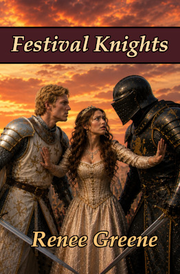
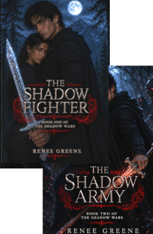
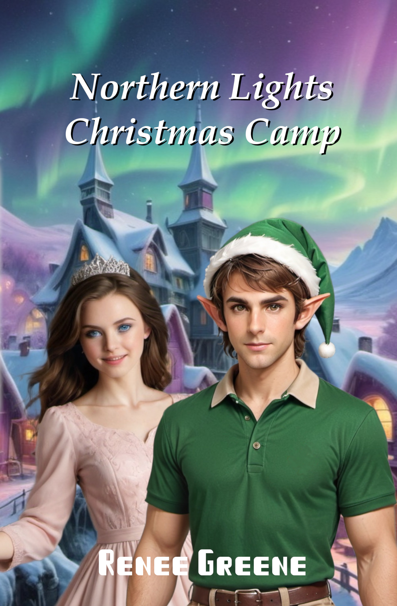
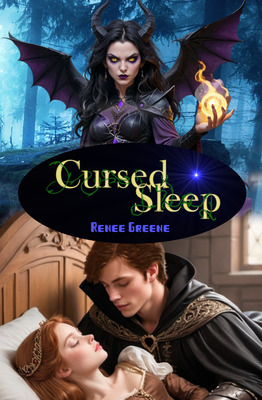
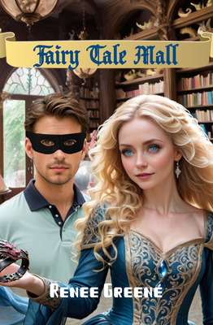
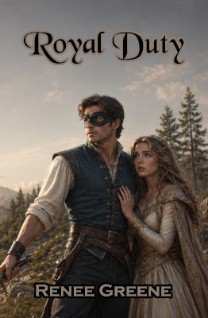
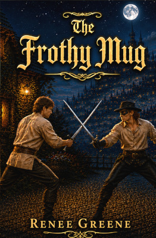

Set in a Renaissance Festival, full of jousts, sword-fights, and entertainment, this book tells a great love story of Rebecca, when her fantasy world and real life intertwine, as she plays the role of a princess and captures the heart of her handsome knight. The story has a great moral of holding to one's standards and being worthy of a handsome prince as Rebecca has to navigate the world of acting and modeling and decide where she draws lines. It's a must read for teens and young adults, and has helped girls who have read it decide to hold to higher standards. The book is recommended for ages 13 and up.

This is the perfect vampire romance, with all the beauty of eternal love and a heroic vampire who must overcome his natural desires and fight the monster within. This is great for pre-teen through adult. It avoids many of the classic problems with vampire stories, and solves the issue of the vampire-human relationship in a truly unique way. It's romance, vampire, super hero, and fantasy all rolled into one great story.

This has the feel of a classic romance, but not one of the standard three plots. Here, a classic feel-good romance meets with sci-fi to provide a romance with a twist. It's great for preteens, teens, or adults who want a fun, light read.

Fairy tales make for beautiful romances, and Cursed Sleep doesn't disappoint. Talia is sent to the human world to avoid her curse, but the boy who falls for her will have to adventure into hers to save her. It's a twist on Sleeping Beauty like non you have imagined, but fun and appropriate for all ages of fairy tale lovers.

Read about real life fairy tales playing out in a mall when a store called Happily Ever After moves in, and Callia gives talismen to people who are living fairy tales. The book pulls together many less-known fairy tales and puts them in a modern setting. It's a truly unique book for lovers of fairy tales and romance. So many stories play out with touching romance.

Swashbucklers and Masked Heroes are both Romantic, and this story has both imbedded in a beautiful fairy tale with true love and plenty of action. It's a great read for all ages of swashbuckling fans, highly recommended for preteen to adult.

When a prince runs away from an arranged marriage, much chaos ensues. This is a high-stakes romance where the hero must learn from the Tiger, an infamous bandit, or he and those he cares about will die. Appropriate for all ages of swashbuckling fans, this is a great gift, sure to delight.